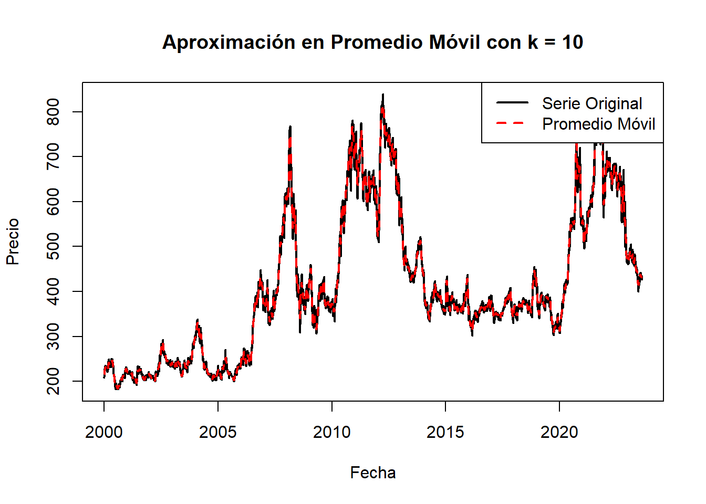
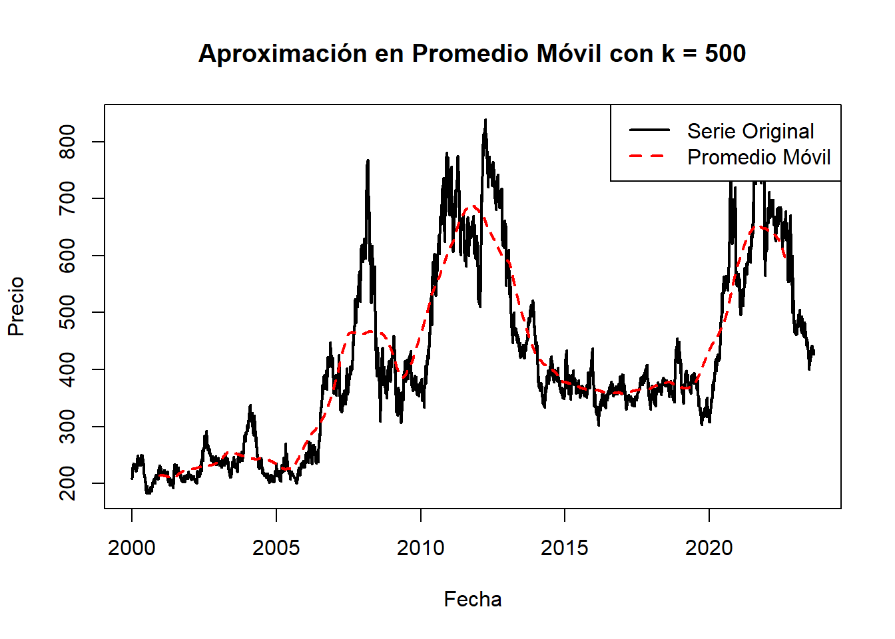
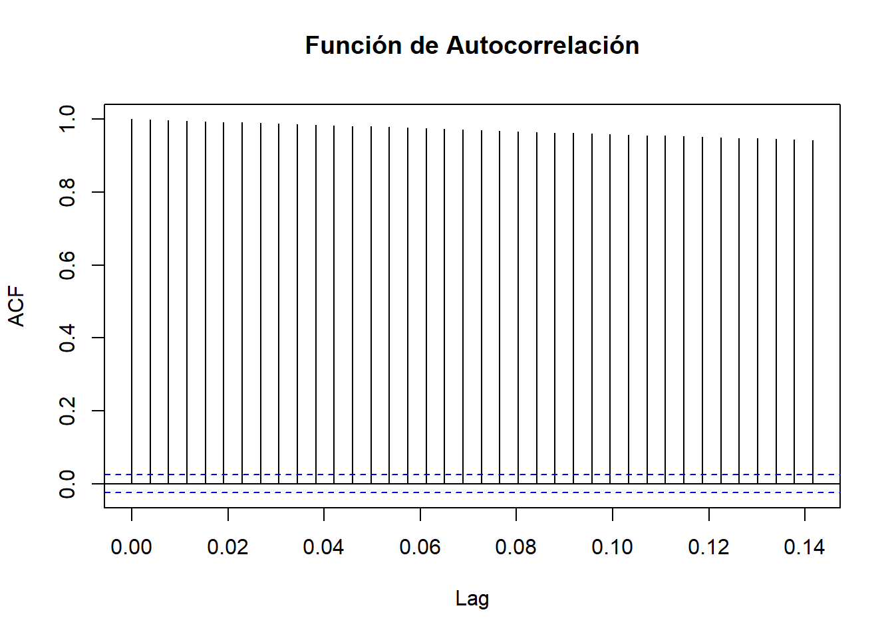
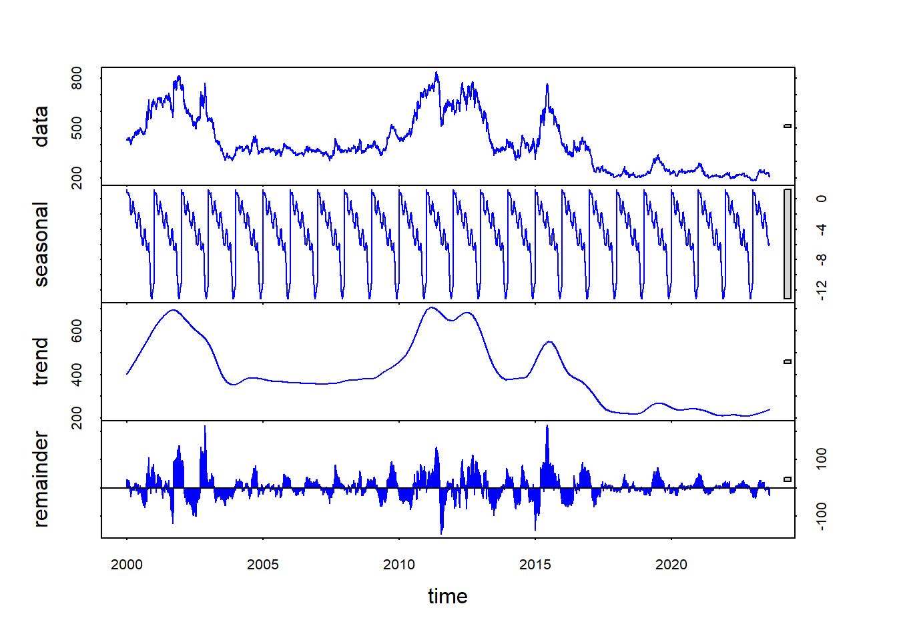

Chapter 6 
6.1 Aproximación en media móvil
Una parte importante del análisis descriptivo de un conjunto de datos son los indicadores de tendencia central, entre ellos, la media. Sin embargo, en el contexto del análisis de series de tiempo, este indicador puede aumentar su sensibilidad, pues la vulnerabilidad de los datos a cambios impredecibles es más alta que en otros conjuntos de datos. Es por eso que se plantea la media móvil, que se define como el promedio de los datos en una ventana de tiempo, es decir, se toma la media de un intervalo de los datos, en vez de la media de los datos en su totalidad. Esto reduce la variabilidad y se puede utilizar para una mejor descripción de estaciones o ventanas de tiempo específicas.
A continuación se pueden observar diferentes ejemplo de aproximación de los datos a través de la media móvil con diversos k, en dónde k representa el tamaño del intervalo tomado:
# Calcula el promedio móvil k = 10
promedio_movil <- rollmean(df_maiz_filtradots, k = 10, align = "center", fill = NA)
# Gráfico comparativo k = 10
plot(df_maiz_filtradots, type = "l", col = "black", lwd = 2, xlab ="Fecha", ylab ="Precio", main = "Aproximación en Promedio Móvil con k = 10")
lines(promedio_movil, col = "red", lwd = 2, lty = 2)
legend("topright", legend = c("Serie Original", "Promedio Móvil"), col = c("black", "red"), lty = c(1, 2), lwd = 2)
# Calcula el promedio móvil k = 50
promedio_movil <- rollmean(df_maiz_filtradots, k = 50, align = "center", fill = NA)
# Gráfico comparativo k = 50
plot(df_maiz_filtradots, type = "l", col = "black", lwd = 2, xlab ="Fecha", ylab ="Precio", main = "Aproximación en Promedio Móvil con k = 50")
lines(promedio_movil, col = "red", lwd = 2, lty = 2)
legend("topright", legend = c("Serie Original", "Promedio Móvil"), col = c("black", "red"), lty = c(1, 2), lwd = 2)
# Calcula el promedio móvil k = 100
promedio_movil <- rollmean(df_maiz_filtradots, k = 100, align = "center", fill = NA)
# Gráfico comparativo k = 100
plot(df_maiz_filtradots, type = "l", col = "black", lwd = 2, xlab ="Fecha", ylab ="Precio", main = "Aproximación en Promedio Móvil con k = 100")
lines(promedio_movil, col = "red", lwd = 2, lty = 2)
legend("topright", legend = c("Serie Original", "Promedio Móvil"), col = c("black", "red"), lty = c(1, 2), lwd = 2)
# Calcula el promedio móvil k = 500
promedio_movil <- rollmean(df_maiz_filtradots, k = 500, align = "center", fill = NA)
# Gráfico comparativo k = 500
plot(df_maiz_filtradots, type = "l", col = "black", lwd = 2, xlab ="Fecha", ylab ="Precio", main = "Aproximación en Promedio Móvil con k = 500")
lines(promedio_movil, col = "red", lwd = 2, lty = 2)
legend("topright", legend = c("Serie Original", "Promedio Móvil"), col = c("black", "red"), lty = c(1, 2), lwd = 2)
==================
6.2 Componentes de una Serie de Tiempo
Las series de tiempo pueden descomponerse en varias componentes que ayudan a comprender la estructura y los patrones presentes en los datos a lo largo del tiempo. Las principales componentes de una serie de tiempo son:
Tendencia: Representa la dirección general de los datos a largo plazo. Puede ser ascendente, descendente o plana. La tendencia captura cambios graduales y persistentes en los datos a lo largo del tiempo.
Estacionalidad: Se refiere a patrones recurrentes o cíclicos que se repiten en la serie de tiempo a intervalos fijos de tiempo, como diarios, semanales, mensuales o anuales. La estacionalidad puede ser causada por factores como la temporada, eventos naturales o económicos.
Ciclo: Es similar a la estacionalidad, pero con una duración más larga y menos regular. Los ciclos representan fluctuaciones económicas o patrones de negocios que se repiten en períodos de varios años.
Variación aleatoria o ruido: Es la parte no sistemática o irregular de la serie de tiempo que no puede explicarse por la tendencia, la estacionalidad o el ciclo. La variación aleatoria puede deberse a factores aleatorios o eventos impredecibles que afectan los datos.
6.3 Estacionalidad
# Calcular la función de autocorrelación
acf_result <- acf(df_maiz_filtradots, plot = FALSE)
# Trazar la función de autocorrelación
plot(acf_result, main = "Función de Autocorrelación")
Trazada ya la serie df_maiz_filtradot, se puede determinar que no presenta una tendencia ascendente o descendente por lo tanto la serie parece ser estacionaria en media.
# Calcular la descomposición estacional
descomposicion <- stl(df_maiz_filtradots, s.window = "periodic")
# Trazar la descomposición
plot(descomposicion, col = "blue")
La gráfica generada por la función stl muestra la descomposición estacional de una serie de tiempo en tres componentes principales: tendencia, estacionalidad y residuos.
Estacionalidad: La parte intermedia de la gráfica muestra la estacionalidad de la serie de tiempo. Esto representa patrones recurrentes o cíclicos que se repiten a intervalos regulares. Por ejemplo, si la serie de tiempo representa datos mensuales, la estacionalidad mostrará patrones que se repiten cada año.
Tendencia: La línea suavizada en la parte superior de la gráfica representa la tendencia de la serie de tiempo. La tendencia muestra la dirección general en la que los datos están cambiando a lo largo del tiempo. Una tendencia ascendente indica un crecimiento en los datos, una tendencia descendente indica una disminución, y una tendencia plana sugiere estabilidad.
Residuos: La parte inferior de la gráfica muestra los residuos, que son las fluctuaciones aleatorias o irregulares que no pueden ser explicadas por la tendencia o la estacionalidad. Los residuos representan la variación aleatoria en los datos que queda después de eliminar la tendencia y la estacionalidad.